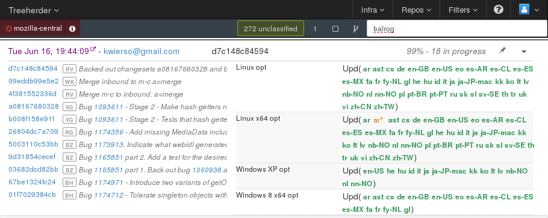

Funsize
Partial update service
Created by Rail Aliiev
What is Funsize
Funsize enables you (CI) to create partial MAR (Mozilla ARchive) update files and publish them to Mozilla Update Server (Balrog).
Current process
- Nightly/release build - generate complete MAR
- Identify previous build(s)
- Generate partial update
- Publish to Balrog
- Repeat for L10N repacks
Cons
- Nightly: limited to a single previous build
- L10N repacks: inline generation takes time
- Releases: have to specify the list of partials a week before release
Why
- UX: Smaller files to download
- Faster adoption of new versions
- Less load on FTP
- Decoupled from builds
Architecture
- Scheduling: Pulse/AMQP based
-
Execution: TaskCluster
- Update generator
- Signing
- Publishing (S3, Balrog)
Reporting: Treeherder

Future plans
- ADI based updates
- Updates (almost) on-demand
- S3 diff cache
What's in a name?
Authors: Anhad (ffledgling) and Nick (nthomas)
- Small updates
- Mini MARs
- Mars Mini